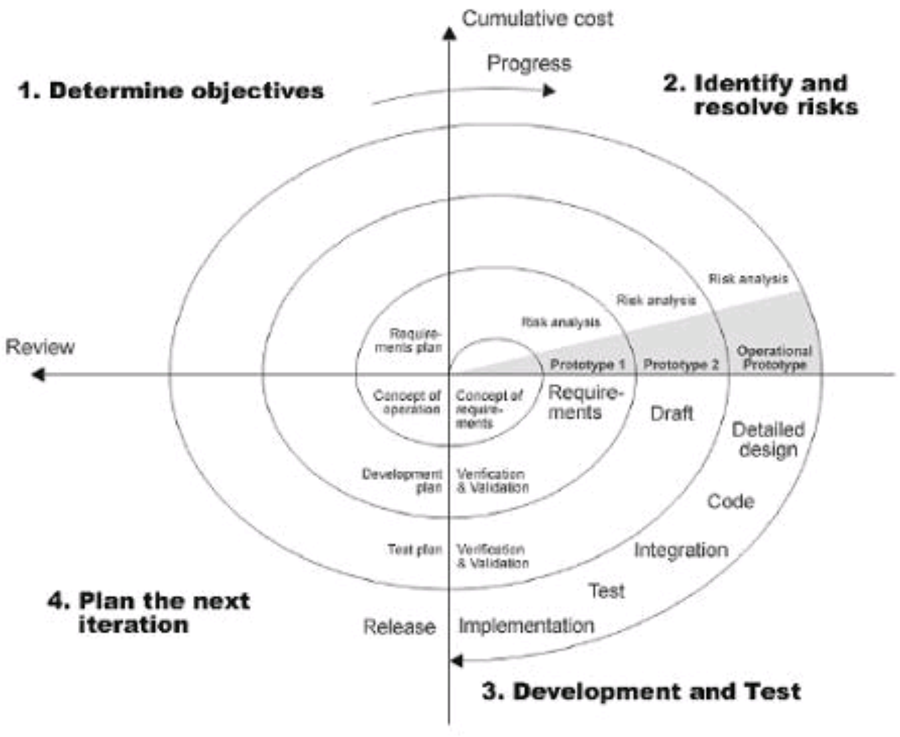

| Spiraal | Kirjeldus | Etappide täpsem kirjeldus | ||||||
| Arendustsykkel | On iteratiivne arendusmudel, mille protssessi kulgemist nimetatakse spiraaliks | Eesmärkide seadmine, Riskide hindamine ja maandamine, Arendus ja valideerimine, Planeerimine |
| HEA | VEAD | ||
| Spiraalmudel võimaldab kasutajatel “näha” süsteemi varases etapis, Mudel võimaldab kasutajatel aktiivselt osaleda planeerimis-, riskianalüüsi-, projekteerimis- ja hindamistegevuses, | Kui projekt on väikese riskiga või väikese suurusega, võib mudel olla kulukas. Riskihindamine pärast iga spiraali läbimist on kulukas, Mudelil on keeruline struktuur, mistõttu võib selle rakendamine olla arendajatele, juhtidele ja klientidele keeruline |
| Visuaalne joonis |  |